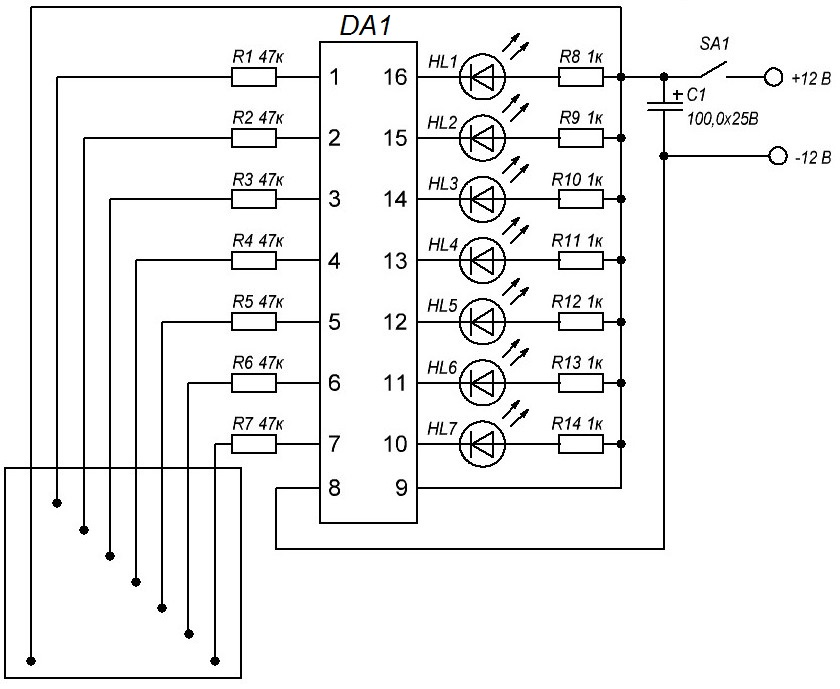

Индикатор уровня воды на микросхеме
Данное устройство работает очень хорошо и весьма надёжно в эксплуатации. При правильной сборке из исправных деталей, указанных на схеме номиналов, в дальнейшей настройке не нуждается, и будет работать сразу при подключении питания 12 В.

Рис. 1 - Схема указателя уровня воды
Таблица 1
| Обозначение | Номинал | Примечание |
|---|---|---|
| C1 | 100 мкФx25 В | Конденсатор электролитический |
| DA1 | ULN2004 | |
| HL1- HL8 | АЛ307 | Светодиоды любого цвета диаметром 4 – 5 мм |
| R1-R7 | 47 кОм | Постоянные резисторы, мощность 0,125-0,5 Вт |
| R8-R14 | 1 кОм | Постоянные резисторы, мощность 0,125-0,25 Вт |
| SA1 | П2К | Переключатель с фиксацией |
Кабель к датчикам уровня воды можно изготовить из восьмижильного кабеля "витая пара". Концы кабеля, помещаемые в воду как датчик уровня, освободить от изоляции на длину 5 – 10 миллиметров и зачищенные концы залудить для уменьшения окисляющего действия воды на металл. Плюсовой электрод нужно изготовить из нержавейки (например, чайная ложка), а место соединения её к проводу защитить от воды при помощи клеевого пистолета. Если место контакта не защитить, то через короткое время электрохимическая реакция сожрёт.
Шаг между датчиками нужно рассчитать исходя из глубины ёмкости. Если нужно измерять большую глубину воды и хочется разместить датчики чаще, то можно изготовить ещё одну или даже несколько подобных схем контроля уровня воды и разместить их последовательно в ёмкости. Конструкция датчиков может быть самой разнообразной. Для подключения щупов можно использовать клеммные колодки.
Для микросхемы лучше всего применить разъём для беспаечного размещения. Это гнездо можно паять и не бояться, что перегреешь ножки, или подействует статическое электричество. Если микросхема вышла из строя, по каким – то причинам, то заменить её можно за пару секунд.
Питание указателя уровня воды в баке можно сделать от любого аккумулятора 12 В или можно использовать обычные батарейки. Если их соединить последовательно 8 штук по 1,5 В получим 12 В.